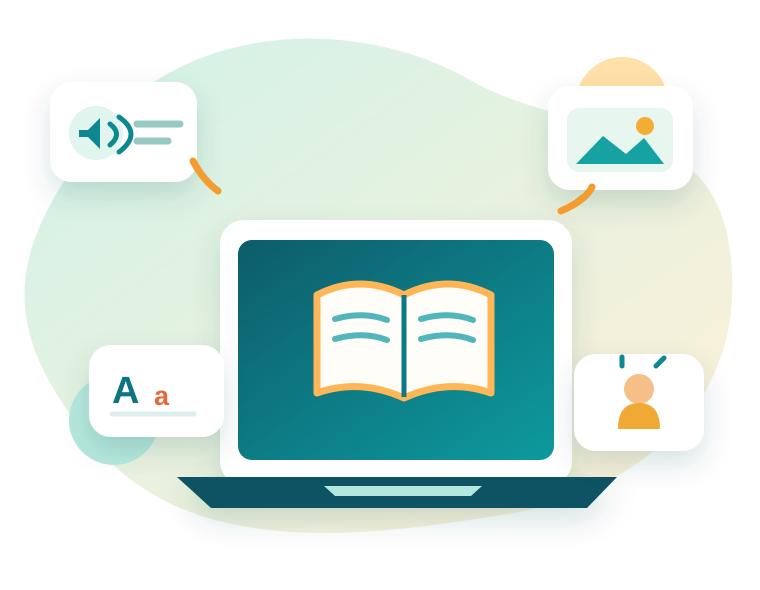

DESDE FORMOSA · MÁS FORMAS DE APRENDER
Tu material, en la forma en que mejor lo leés.
Un texto, un PDF o una foto pueden convertirse en una experiencia de lectura más clara: escuchá, leé por partes o explorá con imágenes y pictogramas.
Sin crear una cuenta. Conservás tu material original y elegís los apoyos que te sirven.

La misma información, más caminos para comprenderla
Herramientas claras y fáciles de usar, a tu ritmo y a tu manera.
- Texto, PDF o foto
Cargá un archivo o sacá una foto y revisá el texto.
- Escuchá la lectura
Activá la voz y seguí el contenido.
- Leé por partes
Avanzá paso a paso, sin apurarte.
- Apoyos visuales
Combiná texto con imágenes y pictogramas.
- Más opciones
Ajustá letra, contraste y actividades de práctica.
¿Por dónde querés empezar?
Elegí el recorrido que más se adapte a lo que necesitás.
Trabajar con mi material
Cargá un texto, PDF o foto. Elegí cómo acceder y hacé una actividad relacionada.
Soy docente
Encontrá orientaciones para crear y revisar materiales accesibles.
Quiero comunicarme
Usá el chat intercultural. Revisá las traducciones automáticas.
¿No sabés qué elegir?
Más información sobre el sitio y las opciones de lectura
¿Usás un lector de pantalla?
Podés usar el lector que ya trae tu dispositivo. No hace falta instalar nada ni activarlo desde esta web.
- Computadora con Windows: Narrador viene incluido y se activa con la tecla de Windows + Ctrl + Enter. También funciona con NVDA, que es gratuito.
- Celular Android: TalkBack, en Ajustes › Accesibilidad.
- iPhone: VoiceOver, en Ajustes › Accesibilidad.
Cada página empieza con el enlace «Ir al contenido» y está ordenada con títulos. Con NVDA o Narrador, la tecla H salta de título en título; con TalkBack o VoiceOver, elegí «Encabezados» en el menú de lectura o en el rotor.
La opción «Imprenta mayúscula» solo cambia cómo se ven las letras: tu lector recibe el texto tal como está escrito. La «Lectura en voz alta» de Acceder a mi material es para quien no usa lector de pantalla; si ya usás uno, leé el texto directamente con él.
Seis formas de leer el mismo texto
Lectura ajustable
Cambiá el tamaño de la letra, el espacio entre líneas, letras y palabras.
Alto contraste
Elegí colores de fondo y de letra que te cansen menos la vista.
Lectura en voz alta
Escuchá el texto cuando quieras, con botones para pausar, volver o avanzar.
Por partes
El texto dividido en partes cortas, con un índice y marcas de lo que ya leíste.
Texto con imágenes
Dibujos simples junto a las ideas principales, siempre con el texto escrito.
Texto con pictogramas
Pictogramas de ARASAAC acompañando las palabras clave de cada parte.
Cómo funciona
Cargá tu material
Texto pegado, archivo PDF o foto. También podés probar con ejemplos.
Revisá el texto
La lectura automática puede equivocarse. Corregí lo necesario. El original sigue disponible.
Elegí cómo leer
Cambiá de forma cuando quieras. Tus ajustes se mantienen.
Tus archivos se quedan en tu dispositivo
El texto de tus fotos y PDF se lee dentro de tu navegador. No hace falta crear una cuenta y la web no guarda tus materiales: al cerrar la pestaña, se borran.
La primera vez, el navegador descarga las herramientas de lectura (PDF.js y Tesseract.js) y el idioma español. Si elegís «Texto con pictogramas», se envían a ARASAAC solo algunas palabras sueltas para buscar cada pictograma, y te avisamos antes.